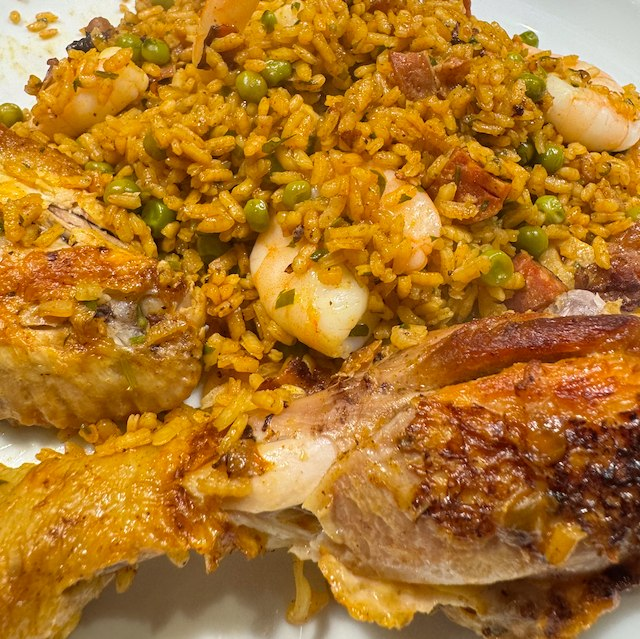
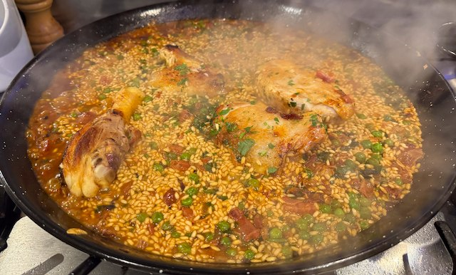

Chicken and Prawn Paella

By Jamie Olive from a Sainsbury Recipe Card 2002.
Ingredients
- chicken stock pot
- 4 pieces chicken (thigh, leg, breast)
- salt and pepper
- olive oil
- 225g chorizo, diced
- 1 onion, finely chopped
- 180g pancetta, chopped
- 4 garlic cloves, thinly sliced
- 1 tbsp smoked paprika
- saffron
- 250ml frozen peas
- 150g big prawns
- 500g paella rice
- handful parsley, chopped
- 1 lemon
Method
Stock. In a sauce pan heat 1.5 litre of water with the chicken stock pot. Keep the stock warm.
Cook the chicken. Heat a large paella dish to hot, add oil and chicken and cook for 10 min.
Chorizo, pancetta and onions. Flip the chicken over, turn the heat to medium, add the chorizo, pancetta, onions and cook for 10 min.
Add the garlic and paprika and cook for a couple of min.
Add the stock, saffron and peas, and turn the heat to high.
Add the rice. Don't stir, shake the pan to even out the rice.
Cook on high heat for 10 min, until the water level drops below the rice.
Cover with foil, turn the heat to low and cook for 5 min.
Turn off the heat and let rest for 5-10 min. Don't peek.
Mix in the prawns and serve with lemon wedges.
